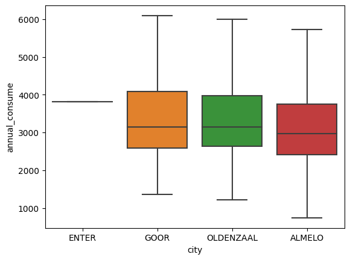

Week 5: Python & Data 3#
from google.colab import drive
drive.mount('/content/drive')
Mounted at /content/drive
%cd drive/MyDrive/electricity_dataset/Electricity
/content/drive/MyDrive/electricity_dataset/Electricity
import pandas as pd
import os
!pip install geopandas
!pip3 install basemap
from matplotlib.patches import Polygon as PG
from matplotlib.collections import PatchCollection
from matplotlib.colors import Normalize
import geopandas as gpd
import folium
from matplotlib.patches import Patch
from shapely.geometry import Point, Polygon
import shapely.speedups
from geopandas import GeoDataFrame
import numpy as np # linear algebra
import pandas as pd # data processing, CSV file I/O (e.g. pd.read_csv)
from datetime import datetime
import matplotlib.pyplot as plt
import matplotlib.cm
from matplotlib import gridspec
import matplotlib as mpl
import seaborn as sns
from mpl_toolkits.basemap import Basemap
from matplotlib.patches import Polygon
from matplotlib.collections import PatchCollection
from matplotlib.colors import Normalize
Looking in indexes: https://pypi.org/simple, https://us-python.pkg.dev/colab-wheels/public/simple/
Collecting geopandas
Downloading geopandas-0.13.0-py3-none-any.whl (1.1 MB)
━━━━━━━━━━━━━━━━━━━━━━━━━━━━━━━━━━━━━━━━ 1.1/1.1 MB 17.9 MB/s eta 0:00:00
?25hCollecting fiona>=1.8.19 (from geopandas)
Downloading Fiona-1.9.4.post1-cp310-cp310-manylinux_2_17_x86_64.manylinux2014_x86_64.whl (16.4 MB)
━━━━━━━━━━━━━━━━━━━━━━━━━━━━━━━━━━━━━━━━ 16.4/16.4 MB 77.0 MB/s eta 0:00:00
?25hRequirement already satisfied: packaging in /usr/local/lib/python3.10/dist-packages (from geopandas) (23.1)
Requirement already satisfied: pandas>=1.1.0 in /usr/local/lib/python3.10/dist-packages (from geopandas) (1.5.3)
Collecting pyproj>=3.0.1 (from geopandas)
Downloading pyproj-3.5.0-cp310-cp310-manylinux_2_17_x86_64.manylinux2014_x86_64.whl (7.7 MB)
━━━━━━━━━━━━━━━━━━━━━━━━━━━━━━━━━━━━━━━━ 7.7/7.7 MB 92.9 MB/s eta 0:00:00
?25hRequirement already satisfied: shapely>=1.7.1 in /usr/local/lib/python3.10/dist-packages (from geopandas) (2.0.1)
Requirement already satisfied: attrs>=19.2.0 in /usr/local/lib/python3.10/dist-packages (from fiona>=1.8.19->geopandas) (23.1.0)
Requirement already satisfied: certifi in /usr/local/lib/python3.10/dist-packages (from fiona>=1.8.19->geopandas) (2022.12.7)
Requirement already satisfied: click~=8.0 in /usr/local/lib/python3.10/dist-packages (from fiona>=1.8.19->geopandas) (8.1.3)
Collecting click-plugins>=1.0 (from fiona>=1.8.19->geopandas)
Downloading click_plugins-1.1.1-py2.py3-none-any.whl (7.5 kB)
Collecting cligj>=0.5 (from fiona>=1.8.19->geopandas)
Downloading cligj-0.7.2-py3-none-any.whl (7.1 kB)
Requirement already satisfied: six in /usr/local/lib/python3.10/dist-packages (from fiona>=1.8.19->geopandas) (1.16.0)
Requirement already satisfied: python-dateutil>=2.8.1 in /usr/local/lib/python3.10/dist-packages (from pandas>=1.1.0->geopandas) (2.8.2)
Requirement already satisfied: pytz>=2020.1 in /usr/local/lib/python3.10/dist-packages (from pandas>=1.1.0->geopandas) (2022.7.1)
Requirement already satisfied: numpy>=1.21.0 in /usr/local/lib/python3.10/dist-packages (from pandas>=1.1.0->geopandas) (1.22.4)
Installing collected packages: pyproj, cligj, click-plugins, fiona, geopandas
Successfully installed click-plugins-1.1.1 cligj-0.7.2 fiona-1.9.4.post1 geopandas-0.13.0 pyproj-3.5.0
Looking in indexes: https://pypi.org/simple, https://us-python.pkg.dev/colab-wheels/public/simple/
Collecting basemap
Downloading basemap-1.3.7-cp310-cp310-manylinux1_x86_64.whl (860 kB)
━━━━━━━━━━━━━━━━━━━━━━━━━━━━━━━━━━━━━━ 860.6/860.6 kB 15.4 MB/s eta 0:00:00
?25hCollecting basemap-data<1.4,>=1.3.2 (from basemap)
Downloading basemap_data-1.3.2-py2.py3-none-any.whl (30.5 MB)
━━━━━━━━━━━━━━━━━━━━━━━━━━━━━━━━━━━━━━━━ 30.5/30.5 MB 25.8 MB/s eta 0:00:00
?25hCollecting pyshp<2.4,>=1.2 (from basemap)
Downloading pyshp-2.3.1-py2.py3-none-any.whl (46 kB)
━━━━━━━━━━━━━━━━━━━━━━━━━━━━━━━━━━━━━━━━ 46.5/46.5 kB 4.5 MB/s eta 0:00:00
?25hRequirement already satisfied: matplotlib<3.8,>=1.5 in /usr/local/lib/python3.10/dist-packages (from basemap) (3.7.1)
Requirement already satisfied: pyproj<3.6.0,>=1.9.3 in /usr/local/lib/python3.10/dist-packages (from basemap) (3.5.0)
Requirement already satisfied: numpy<1.25,>=1.22 in /usr/local/lib/python3.10/dist-packages (from basemap) (1.22.4)
Requirement already satisfied: contourpy>=1.0.1 in /usr/local/lib/python3.10/dist-packages (from matplotlib<3.8,>=1.5->basemap) (1.0.7)
Requirement already satisfied: cycler>=0.10 in /usr/local/lib/python3.10/dist-packages (from matplotlib<3.8,>=1.5->basemap) (0.11.0)
Requirement already satisfied: fonttools>=4.22.0 in /usr/local/lib/python3.10/dist-packages (from matplotlib<3.8,>=1.5->basemap) (4.39.3)
Requirement already satisfied: kiwisolver>=1.0.1 in /usr/local/lib/python3.10/dist-packages (from matplotlib<3.8,>=1.5->basemap) (1.4.4)
Requirement already satisfied: packaging>=20.0 in /usr/local/lib/python3.10/dist-packages (from matplotlib<3.8,>=1.5->basemap) (23.1)
Requirement already satisfied: pillow>=6.2.0 in /usr/local/lib/python3.10/dist-packages (from matplotlib<3.8,>=1.5->basemap) (8.4.0)
Requirement already satisfied: pyparsing>=2.3.1 in /usr/local/lib/python3.10/dist-packages (from matplotlib<3.8,>=1.5->basemap) (3.0.9)
Requirement already satisfied: python-dateutil>=2.7 in /usr/local/lib/python3.10/dist-packages (from matplotlib<3.8,>=1.5->basemap) (2.8.2)
Requirement already satisfied: certifi in /usr/local/lib/python3.10/dist-packages (from pyproj<3.6.0,>=1.9.3->basemap) (2022.12.7)
Requirement already satisfied: six>=1.5 in /usr/local/lib/python3.10/dist-packages (from python-dateutil>=2.7->matplotlib<3.8,>=1.5->basemap) (1.16.0)
Installing collected packages: pyshp, basemap-data, basemap
Successfully installed basemap-1.3.7 basemap-data-1.3.2 pyshp-2.3.1
df_csv_append = pd.DataFrame()
df_csv_append = pd.read_csv('coteq_electricity_2020.csv')
2575
Netwerk Data#
df_csv_append.head()
| net_manager | purchase_area | street | zipcode_from | zipcode_to | city | num_connections | delivery_perc | perc_of_active_connections | type_conn_perc | type_of_connection | annual_consume | annual_consume_lowtarif_perc | smartmeter_perc | |
|---|---|---|---|---|---|---|---|---|---|---|---|---|---|---|
| 0 | Cogas Infra & Beheer BV | Netbeheerder Centraal Overijssel B.V. | Dorpsstraat | 7468CP | 7471AA | ENTER | 19 | 89 | 95 | 89 | 1x35 | 3810 | 89 | 89 |
| 1 | Cogas Infra & Beheer BV | Netbeheerder Centraal Overijssel B.V. | De Stoevelaar | 7471AB | 7471AB | GOOR | 40 | 100 | 98 | 78 | 1x35 | 2637 | 95 | 83 |
| 2 | Cogas Infra & Beheer BV | Netbeheerder Centraal Overijssel B.V. | De Stoevelaar | 7471AC | 7471AC | GOOR | 16 | 100 | 100 | 100 | 1x35 | 1366 | 100 | 94 |
| 3 | Cogas Infra & Beheer BV | Netbeheerder Centraal Overijssel B.V. | De Stoevelaar | 7471AD | 7471AE | GOOR | 41 | 93 | 85 | 54 | 3x25 | 5101 | 93 | 78 |
| 4 | Cogas Infra & Beheer BV | Netbeheerder Centraal Overijssel B.V. | Kerkstraat | 7471AG | 7471AG | GOOR | 14 | 86 | 100 | 36 | 1x25 | 4315 | 100 | 93 |
df_csv_append.shape
(2575, 14)
df_csv_append.columns
Index(['net_manager', 'purchase_area', 'street', 'zipcode_from', 'zipcode_to',
'city', 'num_connections', 'delivery_perc',
'perc_of_active_connections', 'type_conn_perc', 'type_of_connection',
'annual_consume', 'annual_consume_lowtarif_perc', 'smartmeter_perc'],
dtype='object')
df_csv_append.info
<bound method DataFrame.info of net_manager purchase_area \
0 Cogas Infra & Beheer BV Netbeheerder Centraal Overijssel B.V.
1 Cogas Infra & Beheer BV Netbeheerder Centraal Overijssel B.V.
2 Cogas Infra & Beheer BV Netbeheerder Centraal Overijssel B.V.
3 Cogas Infra & Beheer BV Netbeheerder Centraal Overijssel B.V.
4 Cogas Infra & Beheer BV Netbeheerder Centraal Overijssel B.V.
... ... ...
2570 Cogas Infra & Beheer BV Netbeheerder Centraal Overijssel B.V.
2571 Cogas Infra & Beheer BV Netbeheerder Centraal Overijssel B.V.
2572 Cogas Infra & Beheer BV Netbeheerder Centraal Overijssel B.V.
2573 Cogas Infra & Beheer BV Netbeheerder Centraal Overijssel B.V.
2574 Cogas Infra & Beheer BV Netbeheerder Centraal Overijssel B.V.
street zipcode_from zipcode_to city num_connections \
0 Dorpsstraat 7468CP 7471AA ENTER 19
1 De Stoevelaar 7471AB 7471AB GOOR 40
2 De Stoevelaar 7471AC 7471AC GOOR 16
3 De Stoevelaar 7471AD 7471AE GOOR 41
4 Kerkstraat 7471AG 7471AG GOOR 14
... ... ... ... ... ...
2570 Loofgang 7609ZR 7609ZR ALMELO 29
2571 Vista 7609ZS 7609ZS ALMELO 25
2572 Tuinvaas 7609ZT 7609ZT ALMELO 18
2573 Wintertuin 7609ZV 7609ZW ALMELO 45
2574 Aadijk 7610AB 7665EM ALMELO 7
delivery_perc perc_of_active_connections type_conn_perc \
0 89 95 89
1 100 98 78
2 100 100 100
3 93 85 54
4 86 100 36
... ... ... ...
2570 66 100 83
2571 60 100 76
2572 44 100 94
2573 62 100 89
2574 100 43 57
type_of_connection annual_consume annual_consume_lowtarif_perc \
0 1x35 3810 89
1 1x35 2637 95
2 1x35 1366 100
3 3x25 5101 93
4 1x25 4315 100
... ... ... ...
2570 1x35 3779 100
2571 1x35 4715 96
2572 1x35 3798 100
2573 1x35 3455 100
2574 3x25 3874 86
smartmeter_perc
0 89
1 83
2 94
3 78
4 93
... ...
2570 93
2571 88
2572 61
2573 89
2574 14
[2575 rows x 14 columns]>
df_csv_append.describe
<bound method NDFrame.describe of net_manager purchase_area \
0 Cogas Infra & Beheer BV Netbeheerder Centraal Overijssel B.V.
1 Cogas Infra & Beheer BV Netbeheerder Centraal Overijssel B.V.
2 Cogas Infra & Beheer BV Netbeheerder Centraal Overijssel B.V.
3 Cogas Infra & Beheer BV Netbeheerder Centraal Overijssel B.V.
4 Cogas Infra & Beheer BV Netbeheerder Centraal Overijssel B.V.
... ... ...
2570 Cogas Infra & Beheer BV Netbeheerder Centraal Overijssel B.V.
2571 Cogas Infra & Beheer BV Netbeheerder Centraal Overijssel B.V.
2572 Cogas Infra & Beheer BV Netbeheerder Centraal Overijssel B.V.
2573 Cogas Infra & Beheer BV Netbeheerder Centraal Overijssel B.V.
2574 Cogas Infra & Beheer BV Netbeheerder Centraal Overijssel B.V.
street zipcode_from zipcode_to city num_connections \
0 Dorpsstraat 7468CP 7471AA ENTER 19
1 De Stoevelaar 7471AB 7471AB GOOR 40
2 De Stoevelaar 7471AC 7471AC GOOR 16
3 De Stoevelaar 7471AD 7471AE GOOR 41
4 Kerkstraat 7471AG 7471AG GOOR 14
... ... ... ... ... ...
2570 Loofgang 7609ZR 7609ZR ALMELO 29
2571 Vista 7609ZS 7609ZS ALMELO 25
2572 Tuinvaas 7609ZT 7609ZT ALMELO 18
2573 Wintertuin 7609ZV 7609ZW ALMELO 45
2574 Aadijk 7610AB 7665EM ALMELO 7
delivery_perc perc_of_active_connections type_conn_perc \
0 89 95 89
1 100 98 78
2 100 100 100
3 93 85 54
4 86 100 36
... ... ... ...
2570 66 100 83
2571 60 100 76
2572 44 100 94
2573 62 100 89
2574 100 43 57
type_of_connection annual_consume annual_consume_lowtarif_perc \
0 1x35 3810 89
1 1x35 2637 95
2 1x35 1366 100
3 3x25 5101 93
4 1x25 4315 100
... ... ... ...
2570 1x35 3779 100
2571 1x35 4715 96
2572 1x35 3798 100
2573 1x35 3455 100
2574 3x25 3874 86
smartmeter_perc
0 89
1 83
2 94
3 78
4 93
... ...
2570 93
2571 88
2572 61
2573 89
2574 14
[2575 rows x 14 columns]>
df_csv_append.apply(np.max)
net_manager Cogas Infra & Beheer BV
purchase_area Netbeheerder Centraal Overijssel B.V.
street van den Vondelstraat
zipcode_from 7610AB
zipcode_to 7665EM
city OLDENZAAL
num_connections 127
delivery_perc 100
perc_of_active_connections 100
type_conn_perc 100
type_of_connection 3x80
annual_consume 53559
annual_consume_lowtarif_perc 100
smartmeter_perc 100
dtype: object
sns.boxplot(x="city", y="annual_consume", data=df_csv_append, showfliers = False);
